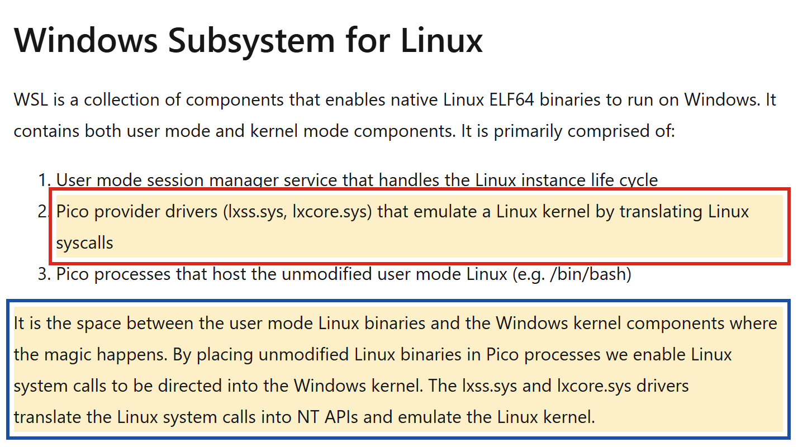
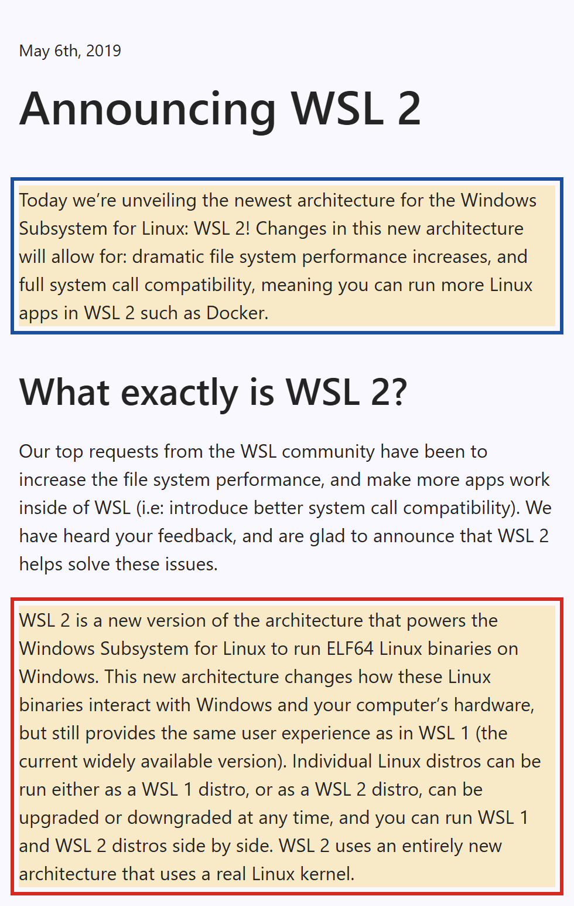

Phụ lục trả lời một câu nảy ra ở tab WSL2 của Bài 04: đã có ba cách được thử để chạy chương trình Linux trên Windows, vậy vì sao hai cách đầu không đủ, và WSL2 khác chúng ở đâu?
Hai kernel, hai bộ syscall khác nhau
Vấn đề có từ lâu trước WSL. Phần lớn server chạy hệ điều hành kiểu Unix, ngày nay chủ yếu là Linux; công cụ
của người làm hạ tầng, như bash, grep, ssh hay trình biên dịch C, sinh ra trong thế giới
đó. Trong khi đó, máy làm việc của rất nhiều developer chạy Windows. Người ta muốn dùng công cụ của server ngay trên
máy mình, để thứ chạy trên laptop giống thứ chạy trên server.
Bài 03 cho biết vì sao chuyện này không tự nhiên mà có. Một chương trình không tự làm gì với phần cứng; nó xin kernel qua syscall. Chương trình biên dịch cho Linux là một tệp theo định dạng ELF, định dạng tệp chạy được của Linux, và bên trong nó là các lời gọi theo đúng bộ syscall của Linux: số hiệu, tham số, ý nghĩa. Kernel Windows có định dạng tệp chạy được riêng và bộ lời gọi riêng, quen gọi là NT API theo tên dòng kernel Windows NT. Đặt một tệp ELF lên Windows thì Windows không chạy nó, và kể cả nếu chạy, các syscall của nó cũng không ai hiểu.
chương trình Linux (tệp ELF) chương trình Windows (tệp .exe)
│ │
│ syscall Linux │ NT API
▼ ▼
kernel Linux kernel WindowsCó ba hướng để giải, và cả ba đều đã được thử. Một là đặt một kernel Linux thật bên cạnh, trong máy ảo. Hai là biên dịch lại chương trình Linux thành chương trình Windows, kèm một lớp thư viện bắt chước những gì Linux cung cấp. Ba là để chương trình Linux nguyên bản chạy, rồi dịch từng syscall của nó sang lời gọi của Windows. WSL2 cuối cùng quay về hướng thứ nhất, nhưng sửa đúng những điểm yếu đã khiến người ta phải tìm hai hướng kia.
Cách giải đầu tiên cũng là cách hiển nhiên nhất: chạy hẳn một máy Linux bên trong máy ảo. Nó chạy được, nhưng chưa đủ.
Máy ảo truyền thống
Cách thẳng nhất là đặt hẳn một máy Linux bên cạnh Windows. Có hai dạng. Dạng thứ nhất là cài song song hai hệ điều hành trên cùng ổ đĩa và chọn một trong hai mỗi lần bật máy, gọi là dual boot; cách này cho Linux thật trên phần cứng thật, nhưng muốn dùng Linux thì phải tắt Windows. Dạng thứ hai là máy ảo như Bài 04 đã định nghĩa: một phần mềm như VirtualBox hay VMware Workstation dựng một máy tính ảo, và bên trong nó chạy một bản Linux đầy đủ với kernel của riêng nó.
Windows máy ảo (VirtualBox, VMware…)
───────────────────────────── ─────────────────────────────
trình duyệt, IDE, Git Bash Linux đầy đủ: kernel, bash…
ổ đĩa ảo riêng, mạng ảo riêng
cửa sổ riêng, tự bật, tự tắtVề kỹ thuật, máy ảo giải quyết trọn vấn đề: chương trình Linux nói chuyện với kernel Linux thật, không có gì phải
dịch. Giới hạn nằm ở chỗ khác, và tài liệu của Microsoft tóm tắt nó trong một câu: trải nghiệm máy ảo truyền thống
"có thể khởi động chậm, bị cô lập, tốn nhiều tài nguyên, và đòi hỏi thời gian của bạn để quản lý nó". Cô lập ở đây
nghĩa là hai hệ thống khó dùng chung: tệp nằm trong ổ đĩa ảo, muốn mở bằng IDE trên Windows phải dựng thư mục chia sẻ;
máy ảo có địa chỉ mạng riêng; RAM cấp cho máy ảo thường bị giữ chỗ dù không dùng tới. Với người chỉ cần gõ vài lệnh
grep lên tệp của mình, chi phí đó quá lớn, nên người ta tìm cách nhẹ hơn.
Hướng thứ hai nhẹ hơn máy ảo nhiều, và nó để lại một dấu vết bạn đã dùng mỗi ngày từ Bài 00 mà có thể không để ý: chính Git Bash.
Cygwin: mang công cụ Unix sang, bằng cách biên dịch lại
Muốn tránh máy ảo, phải để chương trình chạy thẳng trên kernel Windows. Cygwin đi theo hướng đó. Theo trang chính
thức của dự án, Cygwin là "một bộ sưu tập lớn các công cụ GNU và mã nguồn mở, cho chức năng tương tự một bản phân phối
Linux trên Windows", kèm một thư viện cygwin1.dll "cung cấp phần lớn chức năng của POSIX API". POSIX là
bộ chuẩn mô tả những hàm mà một hệ điều hành kiểu Unix phải cung cấp cho chương trình: mở tệp, tạo process, gửi
signal. cygwin1.dll hiện thực các hàm đó bằng những gì Windows có.
mã nguồn chương trình Unix (C)
│
│ biên dịch lại cho Windows
▼
tệp .exe của Windows ──► cygwin1.dll ──► NT API ──► kernel Windows
(hàm POSIX dựng
bằng hàm Windows)Cái giá nằm ngay trong trang của dự án, ở mục Cygwin không là gì: không phải "một cách để chạy ứng dụng
Linux nguyên bản trên Windows", và "bạn phải biên dịch lại ứng dụng từ mã nguồn nếu muốn nó chạy trên Windows". Mỗi
chương trình phải được ai đó biên dịch lại; chương trình chỉ có bản Linux đã biên dịch sẵn thì không dùng được. Và vì
bên dưới vẫn là kernel Windows, những gì thuộc riêng kernel Linux không có cách nào xuất hiện: không OOM killer, không
dmesg, không systemd.
MSYS2, và Git Bash
MSYS2 là một dự án đi sau, theo tài liệu của nó "các công cụ kiểu Unix trong MSYS2 dựa trực tiếp trên Cygwin", nhưng
mục tiêu khác: cho developer quen Linux một môi trường dễ chịu trên Windows để xây dựng chương trình Windows.
MSYS2 chia công cụ của mình thành nhiều môi trường. Môi trường MSYS, đặt ở /usr, chứa các công cụ kiểu
Unix dựng trên nền Cygwin; môi trường MINGW64, đặt ở /mingw64, chứa chương trình Windows thuần, gọi thẳng
hàm của Windows.
Git for Windows, theo trang kỹ thuật của chính nó, "về cơ bản là một tập con của MSYS2 với một bộ gói được cài
sẵn". Git Bash bạn dùng từ Bài 00 chính là bash của MSYS2. Điều này giải thích hai chuyện lạ đã gặp. Ở
trang phân tích output của Bài 00,
which curl trả về /mingw64/bin/curl: curl của Git Bash là chương trình Windows
thuần trong môi trường MINGW64, được dựng với thư viện TLS của Windows, nên không in thông tin chứng chỉ như bản Linux.
Bài 03 phải viết taskkill //F với hai dấu gạch: theo tài liệu của MSYS2, khi gọi một chương trình Windows
từ môi trường dựng trên Cygwin, mọi tham số "trông giống đường dẫn Unix" được tự động đổi sang đường dẫn Windows, và
/F trông đúng như một đường dẫn.
Đây là lý do tab WSL2 của Bài 04 viết "Git Bash ra đời theo cách này". Git Bash cho bạn bash và các lệnh quen thuộc,
nhưng mỗi lệnh là một chương trình Windows; kernel bên dưới vẫn là Windows. Vì thế lab của Bài 03 chỉ thấy được bản
tương đương của signal, và dmesg báo command not found.
Hướng thứ ba không biên dịch lại gì cả: nó dịch từng syscall ngay lúc chương trình chạy.
WSL 1: chạy tệp ELF nguyên bản, dịch từng syscall
Năm 2016, Microsoft đưa vào Windows 10 một thành phần mới, Windows Subsystem for Linux, ra mắt cùng bản cập nhật Anniversary Update năm đó. Bài tổng quan trên blog của nhóm WSL, đăng ngày 22/04/2016, mô tả WSL là "một tập các thành phần cho phép tệp ELF64 Linux nguyên bản chạy trên Windows". Chữ "nguyên bản" là điểm khác Cygwin: không ai phải biên dịch lại gì; bash của Ubuntu, nguyên tệp như trên server, chạy được trên Windows. Phần cốt lõi của nó là hai driver, tức chương trình được nạp vào chạy ngay bên trong kernel Windows, ở kernel mode.

Cơ chế được mô tả đúng như Ảnh 1. Chương trình Linux chạy trong một loại process đặc biệt của Windows gọi là
Pico process, một process gần như trống, không mang theo những thứ một process Windows thường có. Mỗi khi
chương trình gọi một syscall Linux, kernel Windows chuyển lời gọi đó tới hai driver lxss.sys và
lxcore.sys; hai driver này đóng vai kernel Linux, tìm lời gọi Windows tương ứng, thực hiện, rồi trả kết quả
theo đúng cách kernel Linux sẽ trả. Chương trình không biết mình đang chạy trên Windows.
bash của Ubuntu (tệp ELF nguyên bản), trong một Pico process
│
│ syscall Linux
▼
lxss.sys, lxcore.sys dịch syscall Linux sang NT API
│
│ NT API
▼
kernel WindowsGiới hạn của việc dịch
Cách dịch phải theo kịp toàn bộ những gì kernel Linux cung cấp. Linux có vài trăm syscall, mỗi cái có những trường hợp riêng, và kernel Linux còn cung cấp những thứ không phải syscall đơn lẻ mà là cả một cơ chế. Syscall nào chưa được dịch, hoặc dịch chưa đúng từng chi tiết, thì chương trình cần nó hỏng. Bài công bố WSL 2 năm 2019 nói thẳng hai yêu cầu lớn nhất của người dùng WSL 1: tăng hiệu năng hệ thống tệp, và "làm nhiều ứng dụng chạy được hơn trong WSL", tức tương thích syscall tốt hơn. Ví dụ rõ nhất là Docker: nó dựa vào những tính năng của kernel Linux mà lớp dịch không có, nên không chạy được trong WSL 1. Bảng so sánh chính thức của Microsoft hôm nay vẫn ghi WSL 1 không có kernel Linux đầy đủ và không tương thích syscall đầy đủ.
Bước cuối quay về máy ảo, nhưng là một máy ảo đã bỏ phần lớn những điểm yếu nêu ở tab Máy ảo đầy đủ.
Ngày 6/5/2019: một kernel Linux thật trong Windows
Ngày 6/5/2019, nhóm WSL công bố WSL 2 với một câu kết luận gọn: "WSL 2 dùng một kiến trúc hoàn toàn mới, dùng một kernel Linux thật". Cùng ngày, một bài khác của nhóm, Shipping a Linux Kernel with Windows, nói rằng đây là "lần đầu tiên kernel Linux được đưa vào như một thành phần của Windows". Kernel ấy ban đầu dựa trên bản 4.19, bản ổn định dài hạn mới nhất của Linux lúc đó, được công bố mã nguồn đầy đủ, và tinh chỉnh để khởi động nhanh, tốn ít bộ nhớ.

WSL 2 khác máy ảo truyền thống ở cách máy ảo được quản lý. Máy ảo vẫn có, nhưng Windows tự bật, tự tắt và tự quản lý nó; theo tài liệu của Microsoft, WSL 2 "giữ trải nghiệm người dùng như WSL 1" và "không cần cấu hình hay quản lý máy ảo". Bạn không mở cửa sổ máy ảo nào, không cấp RAM cố định; bạn chỉ mở Ubuntu và gõ lệnh như trước. So với tab Máy ảo đầy đủ, ba điểm yếu "khởi động chậm, tốn tài nguyên, phải tự quản lý" đã được gỡ; điểm thứ tư, "cô lập", được làm mềm bằng cách cho Windows và Linux gọi chương trình và đọc tệp của nhau.
WSL 2 phát hành chính thức cùng Windows 10 bản 2004, năm 2020. Bài thông báo của nhóm WSL ngày 13/03/2020 còn cho
biết một thay đổi về cách phân phối: kernel Linux được tách khỏi bản cài Windows và gửi tới máy người dùng qua Windows
Update, "giống như cách cài driver của bên thứ ba". Về sau, chính WSL cũng được tách thành một gói trên Microsoft Store
để cập nhật nhanh hơn; lệnh wsl --update kéo bản mới nhất về.
Giới hạn của WSL 2
Vì tệp của Linux giờ nằm trong ổ đĩa ảo của máy ảo, việc đọc tệp qua lại giữa hai hệ
điều hành chậm hơn WSL 1; bảng so sánh chính thức ghi đúng một hàng WSL 1 thắng, chính là hàng này, và Microsoft khuyên
đặt tệp dự án cùng phía với công cụ dùng nó. Máy cũng phải hỗ trợ và bật ảo hoá phần cứng, điều WSL 1 không cần. Đổi
lại, mọi thứ thuộc kernel Linux có mặt đầy đủ: signal thật, OOM killer, dmesg, và về sau cả systemd.
Những gì còn lại tới hôm nay
Bốn cách giải không thay thế nhau hoàn toàn; cả bốn vẫn đang được dùng, mỗi cách ở đúng chỗ nó mạnh nhất. Bảng 1 đặt chúng cạnh nhau theo ba câu hỏi đã dẫn đường cho cả phụ lục.
| Cách | Chương trình Linux có phải biên dịch lại? | Ai trả lời syscall? | Còn gặp ở đâu hôm nay |
|---|---|---|---|
| Máy ảo đầy đủ | Không | Kernel Linux trong máy ảo | VirtualBox, VMware; phần lớn VPS bạn thuê |
| Cygwin, MSYS2 | Có | Kernel Windows, qua thư viện POSIX | Git Bash |
| WSL 1 | Không | Kernel Windows, qua driver dịch syscall | wsl --set-version <distro> 1, khi cần đọc tệp Windows nhanh |
| WSL 2 | Không | Kernel Linux thật trong máy ảo nhẹ | Mặc định của WSL; nền của Docker Desktop |
Dòng cuối nối lịch sử này với lộ trình. Docker Desktop trên Windows không tự dựng máy ảo riêng như
VirtualBox; theo tài liệu của Docker, nó chạy trong distro WSL riêng tên docker-desktop, tức dựa thẳng
vào kernel Linux mà WSL 2 mang tới, chạy trong chính máy ảo nhẹ mà Windows tự quản.
Nối về bài chính
Câu hỏi của Bài 04 là làm sao có một máy Linux thật trên máy Windows để thấy process, signal và lỗi đúng như trên server. Phụ lục cho thấy vì sao chữ "thật" ở đây quan trọng: Git Bash và WSL 1 đều cho bạn bash, nhưng chỉ WSL 2 cho bạn kernel Linux, và mọi thứ Bài 03 muốn quan sát đều nằm trong kernel. Từ đây, quay lại tab WSL2 của Bài 04 để xem máy ảo đó hoạt động thế nào, hoặc đi thẳng tới Lab để dựng nó.
Nguồn đọc thêm
- Microsoft — Windows Subsystem for Linux Overview (22/04/2016), kho lưu trữ blog. learn.microsoft.com
- Microsoft Command Line blog — Announcing WSL 2 (06/05/2019). devblogs.microsoft.com
- Microsoft Command Line blog — Shipping a Linux Kernel with Windows (06/05/2019). devblogs.microsoft.com
- Microsoft Command Line blog — WSL 2 will be generally available in Windows 10, version 2004 (13/03/2020). devblogs.microsoft.com
- Microsoft Learn — Comparing WSL Versions. learn.microsoft.com
- Cygwin — trang chính thức. cygwin.com
- MSYS2 — What is MSYS2?, Environments, Filesystem Paths. msys2.org/docs/what-is-msys2 · environments · filesystem-paths
- Git for Windows — Technical overview. gitforwindows.org
- Docker Docs — WSL 2 backend on Windows. docs.docker.com/…/wsl
Nguồn ảnh
Cả hai ảnh là ảnh chụp màn hình do tôi tự chụp ngày 03/10/2026 từ trang công khai của Microsoft; các khung màu là phần đánh dấu thêm vào.
- Ảnh 1Mục Windows Subsystem for Linux trong bài tổng quan năm 2016 — chụp màn hình learn.microsoft.com; cắt bỏ mép thanh điều hướng bên trái.
- Ảnh 2Phần đầu bài Announcing WSL 2 — chụp màn hình devblogs.microsoft.com; xoá nút đếm lượt tương tác cạnh ngày đăng, cắt bỏ dòng tên và ảnh đại diện của tác giả.